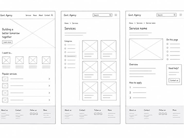

02, Project 01
NICN Website
Redesign
Project Overview
Redesigned the official website of the National Industrial Court of Nigeria with improved usability, information architecture and user experience for all stakeholders.
My Role
UX/UI Designer
Timeline
8 Weeks
Tools
Figma, FigJam, Photoshop, WAVE
Users / Target Audience
Lawyers, Judges, Litigants, Members of the public, Court staff, Researchers and Media.
01 Project Overview
The old NICN website was outdated, difficult to navigate, not mobile friendly and had limited accessibility. The goal of this project was to create a modern, responsive and accessible platform that makes information easy to find and services easy to use.
Problem / Challenge
- Outdated design and inconsistent UI
- Poor information architecture and navigation
- Not mobile responsive
- Low accessibility compliance
- Important services and resources hard to discover
02 Research
I used both qualitative and quantitative methods to understand users, their needs and frustrations.
Methods
- User Interviews
- Heuristic Reviews
- Online Surveys
- Competitive Analysis
Participants
- 12 Legal Practitioners
- 8 Court Staff
- 11 General Public
- 5 Media Personnel
03 Key Insights
- Users need quick access to judgments, cause lists and court forms.
- Search should be smarter and more prominent.
- Mobile experience must be seamless.
- Accessibility and readability are major concerns.
- Trust and credibility should reflect in the design.
04 User Pain Points
- Hard to find judgments and case information.
- Cluttered layout with too much text.
- Not mobile friendly and slow.
- Important services are hidden.
- Poor contrast and small font affect readability.
- No clear structure for resources and downloads.
05 Design Goals
- Make information easy to find and understand.
- Improve accessibility and readability.
- Create a responsive experience across all devices.
- Highlight key services and resources.
- Build trust and credibility through design.
06 My Approach / Process
I followed a user-centered design approach to ensure the solution is intuitive, efficient and accessible.
Understand
Research &
Empathy
Define
Problem &
Opportunities
Design
Ideation &
Solutions
Validate
Testing &
Feedback
Deliver
Polished &
Scalable
07 Old Website vs New Website
A before-and-after comparison of the outdated site and the redesigned platform.
Old Website (Before)
New Website (After)
| Aspect | Old Website | New Website |
|---|---|---|
| Design | Outdated look, cluttered layout, inconsistent UI | Modern, clean and consistent design system |
| Navigation | Complex navigation, hard to find key information | Simplified navigation with clear structure and hierarchy |
| Mobile Experience | Not mobile responsive, difficult to use on phones | Fully responsive and optimized for all devices |
| Information Architecture | Poor content organization, information buried | Logical structure with easy access to key services |
| Accessibility | Low contrast, small text, not accessibility compliant | WCAG 2.1 compliant with better contrast and readability |
| Performance | Slow loading speed | Optimized assets and faster performance |
| User Experience | Frustrating and confusing experience | Intuitive, user-friendly and engaging experience |
| Trust & Credibility | Design didn't reflect the court's authority | Professional design that builds trust and credibility |
08 Information Architecture
Organised content into a clear structure.
About Us
Services
Judgments
Media
09 User Flow
Simplified flow for common user tasks.
Find a Judgment
File a Case
10 Design Exploration
Exploring different layouts, components and visual styles.

11 Wireframes
Low-fidelity wireframes to validate structure and flow.

12 Visual Design
Clean, modern design with court-inspired color palette.

13 Final Solution
A complete polished solution ready for real users.

14 Prototype
Interactive prototype to test the entire user journey.
View Prototype
15 Outcomes / Impact
48%
Increase in mobile traffic
36%
Increase in time on site
60%
Increase in pages per session
90+
Accessibility score (WAVE & Lighthouse)
Positive
Feedback from users and stakeholders
16 Lessons Learned
- User research is key to solving the right problems.
- Information architecture has a huge impact on usability.
- Accessibility is a requirement, not an add-on.
- Continuous testing and feedback lead to better outcomes.
- Designing for trust is as important as designing for usability.
17 Next Steps
- Integrate e-filing system for a seamless experience.
- Implement advanced search and filtering.
- Add multilingual support (English and Hausa).
- Expand AI-powered feedback for quick assistance.
Have a similar project in mind?
Let's build digital experiences that create real impact.